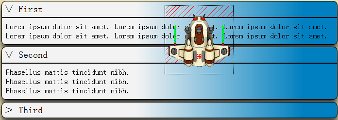

1. Procedural Layout —— 程序化布局
简介：
传统的“Responsive Web Design”都是借助CSS驱动浏览器进行排版。
我独树一帜 —— 完全采用JavaScript实现排版算法，同时引入丰富的动画系统。
顺便还利用HTML5 History API实现“前端URL路由”，请单击主导航链接，并观察浏览器地址栏的变化，
您甚至可以试着自己编辑地址栏，在多个“状态（而非页面）”间切换！
请尝试改变浏览器窗口尺寸，若窗口已最大化则先把窗口向下还原，再用鼠标拖动窗口边框，
观察页面在不同窗口宽度下的变化！一共有三种布局（分别针对PC、平板、手机）。如果您能直接使用平板或手机访问那就更好了！（流量费自理☺）
为什么很多人都没有注意到这句话呢？！第一个示例不是展示页面内容，而是展示页面布局！自适应三种设备的屏幕宽度！
Bicycle.html
2. 与程序化布局协作的控件系统
简介：
我采用CSS3的新效果制作自己的控件库，目前虽然数量不多，却也包含了一些最常用的控件，请试试操作他们的感觉！
nUiWgts.html
PC用户看过来：高级技术展示（2014/10/12） —— 精确拾取
进入上述页面后，请按键盘“S”键，会出现一张卡通宇宙飞船的图片，
请拖动页面的垂直滚动条，使这张图片近似位于下图所示的位置，黑色虚线框表示图像的覆盖区域：

然后请在上图红色阴影区域内单击（我是说单击示例页面的对应位置，不是上面这个图！），
可以看到，折叠框并没有反应，但把鼠标平移离开黑色虚线框之后再单击，折叠框就会响应。
原因在于，虽然图像在红色阴影区是完全透明的，但浏览器仍把图像按照一个完整的长方形处理；
遗憾的是，用户“本以为”自己点中的是折叠框，不是图像！
—— 下面一起来见证奇迹的时刻，Σ( ° △ °|||)︴
请按键盘“P”键，然后回到红色阴影区单击（注意不要点到宇宙飞船），您会惊讶地发现……
然而，若您点在宇宙飞船上，折叠框就没有反应！—— 我们现在能透过透明像素，正确拾取到背景元素了！
4. 我翻译的JavaScript标准——《ECMA-262》——前十四章
简介：
JavaScript标准是由ECMA（欧洲计算机制造商联合会）制订的，我翻译的是2011年6月颁布的5.1版，这也是HTML5主要使用的版本。
Ecma-262 中文版.docx
对照阅读 Ecma-262 英文原版.pdf
恳请各位面试官注意，笔者好歹是读过标准的人，您在面试时考我几道JavaScript题我很高兴，但拜托您问得要有难度可以吗？
像原型链、闭包、怎么实现面向对象编程（封装、继承、多态）、函数的this指针在赋值时会丢失因此需要绑定……
这些问题，我都快被问吐了；我为您提供几道例题以供参考，我希望您问得题的难度至少能与下面第一道题相当(^_^)：
①【难度：小】请解释一下这段代码alert()的输出：
function tClass() { }
tClass.prototype = { s_C : 0 };
var o = new tClass();
alert("tClass.prototype.s_C = " + tClass.prototype.s_C + ", o.s_C = " + o.s_C); // 0, 0
++ o.s_C;
alert("tClass.prototype.s_C = " + tClass.prototype.s_C + ", o.s_C = " + o.s_C); // 0, 1
②【难度：中】请解释一下这个（有点变态的）表达式的结果为什么是字符串"10,1"，希望没有吓到您：
++[[0]][+[0]]+[[0,1]][+[0]]
③【难度：大】请问在JavaScript里，如何正确实现“深拷贝”？
请注意，这道题绝非您一开始想象得那么简单，jQuery的extend函数并不正确！——也许吓了您一跳——
但是，jQuery的extend函数采用的是“贪心算法”，然而贪心算法用来执行深拷贝是错误的！
答案绝对出乎您的意料，这也是为什么难度被标为“大”的原因。
答案是：办不到。O(∩_∩)O哈哈~，因为在JavaScript里，无法正确深拷贝一个函数！